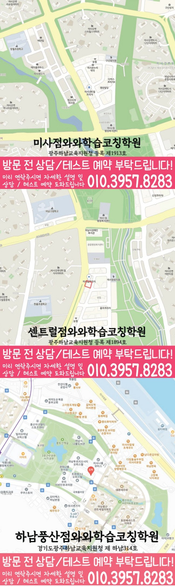

와와학습코칭센터 미사점
경기 하남시 미사강변대로 212 미사센트럴프라자 309
HIGH SCHOOL MATH
미사신도시에서 안내하는 와와학습코칭센터 미사점의 방문 정보와 고1·고2·고3 기재 여부를 확인하고, 필요한 학년의 학습 점검 안내로 이동해 보세요.
경기 하남시 미사강변대로 212 미사센트럴프라자 309
광주하남교육지원청 등록 제1913호
통합 상담 전화 010-6839-8283 · 문의할 때 와와학습코칭센터 미사점과 학생의 학년을 말씀해 주세요.
미사신도시 안내에서 연결되는 센터는 와와학습코칭센터 미사점입니다. 제공 자료에서 이 센터로 연결되는 동네는 3곳입니다. 이 가운데 풍산동, 미사도 같은 센터를 안내합니다.
동네 안내 수는 센터 수와 다릅니다. 실제 방문지는 위의 센터 정보에 적힌 주소를 확인하고, 출발할 곳과 희망 방문 시각을 알려 주세요.
학년별로 자료에 기재된 상태를 확인하세요. 기재된 학년도 현재 과목·범위·시간표·반 편성은 상담에서 확인해야 합니다.
자료의 수학 가능 학년 목록에 기재돼 있습니다.
고1 학습 점검·상담 안내자료의 수학 가능 학년 목록에 없어 수강 가능 여부를 먼저 문의해야 합니다.
자료의 수학 가능 학년 목록에 없어 수강 가능 여부를 먼저 문의해야 합니다.
자료에 고등학교 참고 목록이 없습니다. 재학 학교명을 알려 주고 상담해 주세요.
목록은 학교별 전용 반이나 내신 대비 수업 개설을 확정하는 정보가 아닙니다. 시험 범위표, 교과서와 수업 프린트를 준비해 현재 필요한 범위를 다룰 수 있는지 문의해 주세요.
현재 교재와 진도에 맞는 학년별 안내에서 구체적인 학습 예시를 확인해 보세요.
상담에는 재학 학교·학년·수강 과목명, 현재 교재와 풀이가 남아 있는 오답을 준비해 주세요. 학년만으로 배우는 과목이나 시험 범위를 단정하지 않습니다.
종합 안내에서는 방문할 센터와 자료상 가능 학년, 학교 참고 정보를 확인합니다. 고1·고2 학년별 안내에서는 현재 교재에 적용할 학습 점검 예시와 오답 기록 방법을 살펴볼 수 있습니다.
학교 참고 목록은 상담할 때 학교와 시험 자료를 설명하기 위한 정보입니다. 전용 반이나 시험 대비 수업 개설을 뜻하지 않으며, 실제 과목명과 범위표를 알려 주고 별도로 확인해야 합니다.
자료의 학년 목록에 없다는 사실만으로 현재 수강 가능 여부를 단정할 수 없습니다. 원하는 학년과 과목을 먼저 문의해 주세요. 기재된 학년도 현재 시간표·반 편성·정원은 상담에서 확인해야 합니다.
출발할 곳, 희망 요일·시각, 재학 학년과 수강 과목명을 알려 주세요. 센터 정보의 방문 주소를 확인하고, 교습비 자료에 적힌 과목·수업 시간·횟수가 상담 조건과 같은지 대조해 주세요.


와와학습코칭센터 미사점의 위치와 미사신도시 생활권을 기준으로 고등 수학 상담 정보를 확인합니다. 방문 전 실제 이동 동선과 상담 가능 시간을 함께 확인해 주세요.